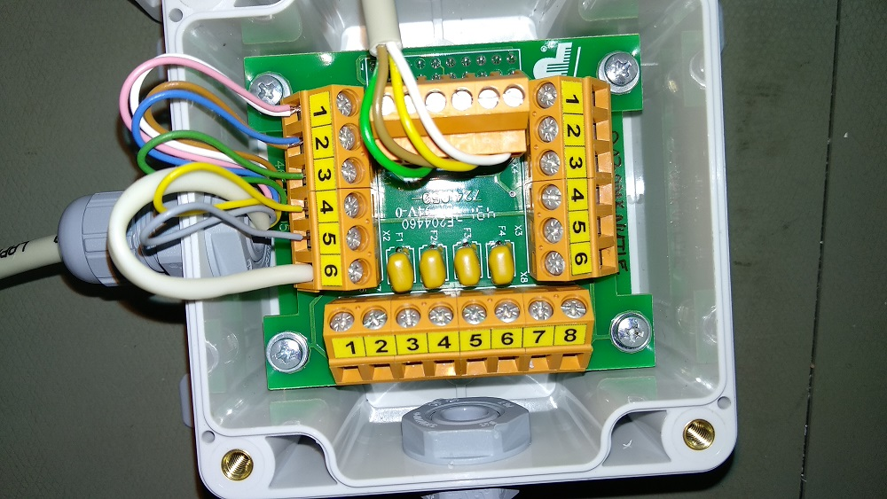

Прошивка сигнализатора

- Подключить комплект плат к компьютеру через USB адаптер.
- При подключении замкнуть два контакта на нижней плате
- Шить через Flip
- Выбрать AT89C51ED2
- RS232 ⇛ Выбрать порт
-
Выбрать прошивку. Прошивка — 1121 Signalizator. Есть две версии — sig1121_RAZOMKNUTYE.hex(06.12.2013) и sig1121_ZAMKNUTYE.hex(04.09.2015), если версия не задана конкретно, то шьется 13-я (Razomknutie)
- Выбрать Erase и Program
- Run
- После завершения процесса прошивки выбрать Level2 и снять BLJB
- Disconnect
- Поставить на плате метку о прошивке
 Желтый и зеленый провод подключаются нестандартно (наоборот)
Желтый и зеленый провод подключаются нестандартно (наоборот)


Сигнализатор в паре с 25-и метровым кабелем работает только при подключенном блоке питания к 1123 (либо с полностью заряженным) 25-и метровый кабель уже заменен на кабель с большим сечением, при заказе кабеля иметь это в виду
Проверка работы
- Подключить кабель: 
- Подключить 1123. Зарядку не подключать. Лучше проверять на не полностью заряженных приборах. Включить. На сигнализаторе должен загореться зеленый индикатор. Поднести к 1123 источник — должен загореться красный индикатор и включиться звуковая сигнализация Если используется 25-и метровый кабель:
- Прозвонить мультиметром по-парно все контакты: 1-й и 2-й, 3-й и 4-й и т.д. Все пары должны показывать ⧝, т.е. не звониться (для Разомкнутых)
- Поднести источник. Замерить попарно (1-й и 2-й, 3-й и 4-й и т.д.) мультиметром — пары должны звониться (быть замкнутыми)
- Если всё работает — зажать гермовводы
- Готово